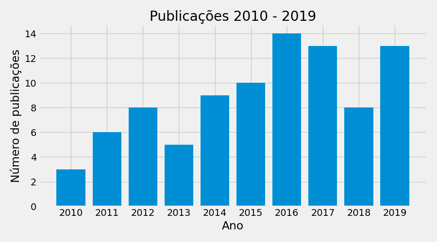
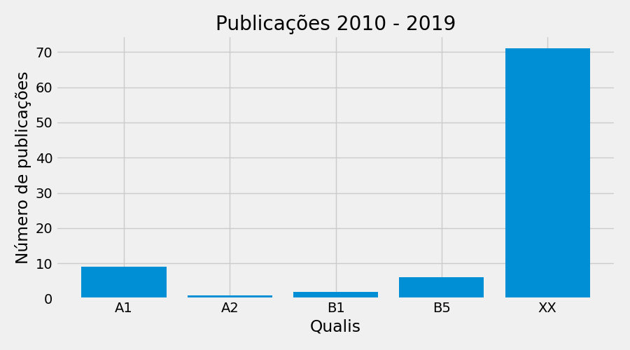

Nome: Erico Souza Teixeira Nascimento: Recife - PE Instituição: Universidade Federal de Pernambuco Resumo: Com graduação em Ciência da Computação pela Universidade Federal de Pernambuco (UFPE) (2002), mestrado em Ciência da Computação pelo programa de pós-graduação do Centro de Infórmática da UFPE (2005), doutorado em Química pelo programa de pós-graduação do Departamento de Química Fundamental da UFPE (2009), tendo estágio de pós-doutor do Departamento de Química Fundamental da UFPE (2011-2014) sob coordenação do professor Ricardo L. Longo e do Departamento de Química e Bioquímica da Texas Tech University sob coordenação do professor Jorge A. Morales (2015-2017). Apresento experiência na área de Ciência da Computação, com ênfase em ciências naturais computacionais e computação natural aplicadas nas áreas de bioinformatica, química teórica e computacional, computação quântica e inteligência artificial. Atualmente sou Consultor Educacional do Centro de Estudos e Sistemas Avançados do Recife (CESAR), sendo membro do corpo docente da graduação e pós-graduação do CESAR School, e coordenador do grupo de pesquisa Natural Computing and Computacional Natural Science (C2N2s), no qual se destaca o Quantum Application in Technology and Softwares (|QATS>), grupo voltado para computação quântica.
Período avaliado: 2010 - 2019
Número de membros na equipe: 1
Número de projetos de extensão: 0
Número de projetos de pesquisa: 11
Livros publicados: 0
Capítulos publicados: 0
Artigos completos publicados em periódicos: 6
Orientações:
Projetos de extensão
Projetos de pesquisa
Processamento de Alto Desempenho em Química. início: 2011.0 fim: 2014.['Erico Souza Teixeira', 'Longo, Ricardo L.'].
Dinâmica Quântica de Elétrons e Núcleos (END): novas implementações baseadas em ondas planas. início: 2015.0 fim: ATUAL.['Erico Souza Teixeira', 'Jorge Alberto Morales'].
PACE - Python Accelerated Coherent-states Electron-nuclear-dynamics. início: 2018.0 fim: ATUAL.['Erico Souza Teixeira', 'Jorge Alberto Morales'].
Aprendizagem de Máquina Aplicada na Predição de Resistência de Bactérias a antibióticos. início: 2020.0 fim: ATUAL.['Erico Souza Teixeira'].
Aprendizagem de Máquina aplicada no diagnóstico da COVID-19. início: 2021.0 fim: ATUAL.['Erico Souza Teixeira', 'Roberto Dias Lins Neto', 'Matheus Vitor Ferreira Ferraz', 'José Cláudio Soares Neto', 'Renan Didier Rizzatto'].
Montagem de sequências de DNA com Transformer. início: 2021.0 fim: 2021.['Erico Souza Teixeira', 'Tiago Lopes Valença'].
Identificação de Câncer de Mama por Aprendizagem de Máquina. início: 2021.0 fim: ATUAL.['Erico Souza Teixeira', 'João Victor Bravo Montarroios'].
Princípios de equidade na geração de dados para aprendizado de máquina utilizando dados clínicos. início: 2021.0 fim: ATUAL.['Erico Souza Teixeira', 'Thiago José Carvalho de Moraes'].
Química Computacional Quântica aplicada na dinâmica de reações. início: 2021.0 fim: ATUAL.['Erico Souza Teixeira', 'Ricardo Cesar Andrade', 'Everton Gonçalves Dias'].
Síntese de som com algoritmos evolucionários. início: 2021.0 fim: ATUAL.['Erico Souza Teixeira', 'Arthur Oliveira Reis'].
Difusão espacial do COVID-19 no Brasil. início: 2021.0 fim: ATUAL.['Erico Souza Teixeira', 'Leonardo Castelo Branco de Melo'].
Publicação de livros e capítulos
Não há livros publicados
Não há capítulos publicados
Publicação em periódicos
Produção de periódicos por ano

Número de publicações por ano.
Produção de periódicos por qualis

Publicações de periódicos por qualis.
Interação entre pesquisadores
Grafo de colaboração entre pesquisadores apenas em artigos Não foi possível localizar interações em periódicos para os seguintes pesquisadores:
Erico Souza Teixeira
Relação de artigos em periódicos
Charge transfer in collisions of the effectively-one-electron isocharged ions Si^{3+}, C^{3+}, and O^{3+} with atomic hydrogen. ano: 2011.0, Physical Review. A, XX. , JCR -99.0. ['Guevara, N. L.', 'Erico Souza Teixeira', 'Hall, B.', 'Öhrn, Y.', 'Deumens', 'Sabin, J. R.']
Understanding the Reactivity and Regioselectivity of Methylation of Nitronates [R 1</sup> R 2</sup> CNO 2</sub> ] −</sup> by CH 3</sub> I in the Gas Phase. ano: 2015.0, JOURNAL OF ORGANIC CHEMISTRY, A1. , JCR -99.0. ['MAHMOOD, AYYAZ', 'Erico Souza Teixeira', 'Longo, Ricardo L.']
Chemometric analysis of the luminescence quantum yields in lanthanide ion complexes. ano: 2016.0, Journal of Luminescence, XX. , JCR -99.0. ['Erico Souza Teixeira', 'NETO, BENÍCIO B.', 'DE OLIVEIRA, PAULO M.C.', 'Longo, Ricardo L.']
Exploring water radiolysis in proton cancer therapy: Time-dependent, non-adiabatic simulations of H+ + (H2O)1-6. ano: 2017.0, PLoS One, A1. , JCR 2.8. ['PRIVETT, AUSTIN J.', 'Erico Souza Teixeira', 'STOPERA, CHRISTOPHER', 'Jorge Alberto Morales']
Electron Nuclear Dynamics Simulations of Proton Cancer Therapy Reactions: Water Radiolysis and Proton- and Electron-Induced DNA Damage in Computational Prototypes. ano: 2018.0, Cancers, XX. , JCR 6.2. ['Erico Souza Teixeira', 'UPPULURY, KARTHIK', 'PRIVETT, AUSTIN', 'STOPERA, CHRISTOPHER', 'MCLAURIN, PATRICK', 'MORALES, JORGE']
Symmetry-breaking effects on time-dependent dynamics: correct differential cross sections and other properties in H + C H at = 30 eV. ano: 2019.0, PHYSICAL CHEMISTRY CHEMICAL PHYSICS, A1. , JCR 3.6. ['MCLAURIN, PATRICK M.', 'MERRITT, RYAN', 'DOMINGUEZ, JUAN C.', 'Erico Souza Teixeira', 'Jorge Alberto Morales']
Produção individual de projetos e periódicos por ano e qualis 2010-2019
total de projetos de pesquisa como coordenador = 11
total de projetos de pesquisa como integrante = 1
Orientações:
Não há livros
Não há capitulos
produção total de artigos = 6
YEAR
A1
XX
0
2011
0
1
1
2015
1
0
2
2016
0
1
3
2017
1
0
4
2018
0
1
5
2019
1
0
Resumo de orientações do grupo 2010-2019
Possibilidade da contabilização de co-orientação.
Resumo da produção de artigos em periódicos do grupo 2010-2019
FULL_NAME
A1
XX
TOTAL
0
Erico Souza Teixeira
3
3
6
Indicadores CAPES
Para saber o método de cálculo dos índices consulte https://rafatieppo.github.io/lucylattes/.
Os seguintes PPGs foram econtrados nos curriculos dos pesquisadores: ENGENHARIA DE SOFTWARE, MESTRADO PROFISSIONAL EM ENGENHARIA DE SOFTWARE.
O PPG avaliado foi: ENGENHARIA DE SISTEMAS AGRÍCOLAS
Índice de orientação (IndOri)
Avalia as defesas com orientação de docentes permanentes(DP) do programa. O indicador é calculado para cada ano e depois calculada a média para o quadriênio
Para que a orientação possa ser contabiliza, no cadastro de orientações do currículo Lattes do pesquisador, o nome do PPG da orientação deve ser idêntico ao PPG avaliado. Maísculas e minúsculas NÃO diferem.
Índice de Produtividade referente a artigos científicos (IndProdArt)
Avalia toda a produção intelectual do programa no formato de artigo científico, sendo que a participação de um docente permanente como autor é condição obrigatória para validar a produção.
QUADRIENIO_INI
QUADRIENIO_FIM
INDPRODART
0
2013
2016
1
1
2017
2020
0.9
Índice de autoria discente
Índice de discentes autores (IndAut):Avalia a proporção de discentes autores (E) em relação ao total de discentes do programa. Foram considerados para o cálculo de E, os discentes e egressos até cinco anos quando autores de artigos.
Índice de produtos com autoria discente (IndDis): Avalia a quantidade de produtos intelectuais (artigos) de autoria discente ou de egressos até 5 anos, em relação ao total de discentes do programa (G).
Considera apenas produção em periódicos
INDAUT: Índice de discentes autores, INDDIS: Índice de produtos com autoria discente
Indicador de distribuição dos docentes permanentes por faixa de IndProd (DistIndProdDP)
Nesse caso, calcula-se o IndProd para cada docente permanente e posteriormente os docentes são distribuídos conforme as faixas apresentadas para o IndProd. Feito isso, calcula-se o percentual de docentes permanentes (DP) classificados em cada faixa (MB, B, R e F/D) em relação ao corpo docente permanente total. O somatório dos percentuais das faixas MB, B e R permite avaliar o equilíbrio na distribuição da produção docente.
Classificação dos pesquisadores por quadriênio
QUADRIENIO
FULL_NAME
INDPRODART
CLASSIF
0
2013-2016
Erico Souza Teixeira
1
BOM
1
2017-2020
Erico Souza Teixeira
0.9
BOM
Indicador DistIndProdDP
QUADRIENIO
DISTINDPRODDP
0
2013-2016
100
1
2017-2020
100
GOSTOU ?
Acesse repositório lucyLattes e nos de uma estrela clicando na estrela no topo da página(lado direito)
Caso queira, vc pode pode ajudar com quanto quiser para manter o projeto via PayPal:
AVISOS:
Arquivo para classificacao qualis utilizado: qualis_agrarias_periodicos_2016.csv
Este programa é um software livre; você pode redistribui-lo e/ou modifica-lo dentro dos termos da Licença Pública Geral GNU. Verifique o arquivo LICENSE.txt
Os resultados estão sujeitos a falhas devido a inconsistencias no preenchimento dos CVs Lattes